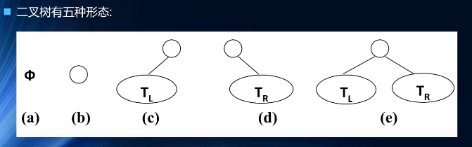
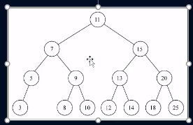
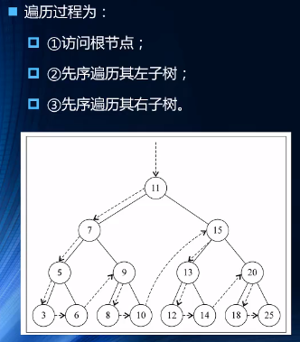

如果树树中每个节点最多只能有两个子节点，这样的树就成为二叉树
二叉树的几个比较重要的特性
- 一个二叉树第i层的最大节点数为：2^(i-1), i >= 1
- 深度为 k 的二叉树最大节点总数为：2^k - 1, k >= 1
- 对任何非空二叉树 T，若 n0 表示叶节点的个数、n2 是度为 2 的非叶节点个数，那么两者满足关系 n0 = n2 + 1

完美二叉树也称作满二叉树：每层节点都哦有2个子节点
完全二叉树：除二叉树最后一层外，其他各层的节点数都达到最大个数，且最后一层从左向右的叶节点连续存在，只缺右侧若干节点
完美二叉树是特殊的完全二叉树
二叉搜索树(BST,Binary Search Tree)(二叉排序树或二叉查找树)
二叉搜索树是一颗二叉树，可以为空
如果不为空，满足以下性质：
- 非空左子树的所有键值小于其根节点的键值
- 非空右子树的所有键值大于其根节点的键值
- 左，右子树本身也都是二叉搜索树
二叉搜索树特点
- 相对较小的值总是保存在左节点上，相对较大的值总是保存在右节点
- 查找效率很高，这也是二叉搜索树中搜索的来源
模拟树的样子
遍历方式
先序遍历